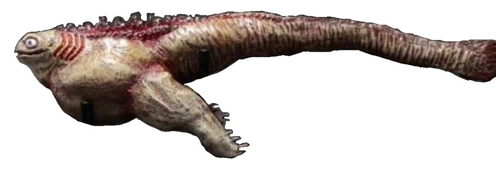
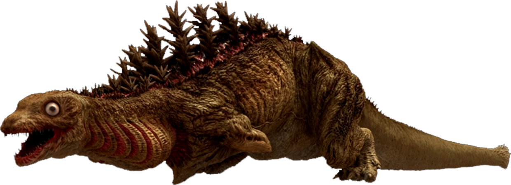
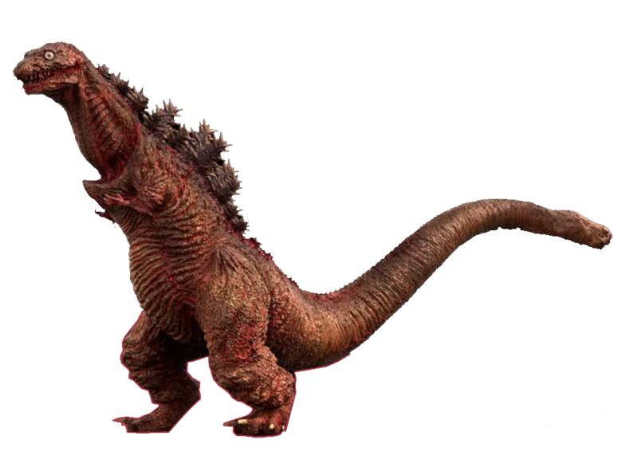
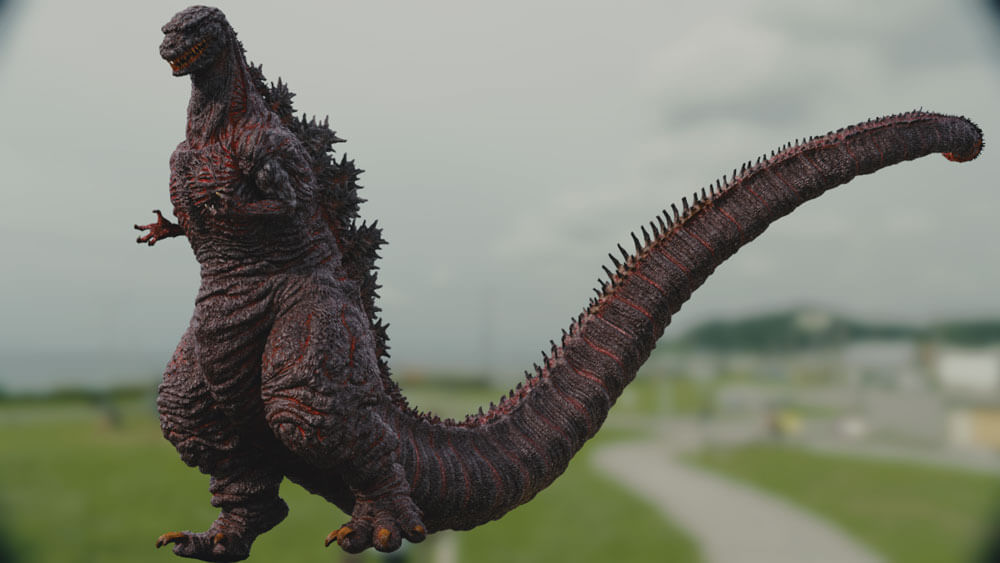
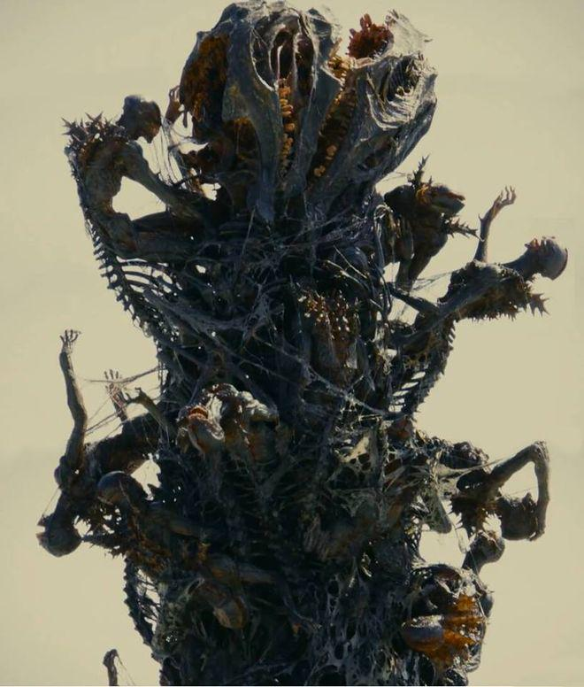

Shin Godzilla
| Nombre | Shin Godzilla |
|---|---|
| Origen | Godzilla: Resurgence (2016) |
| Diseño | Toho Studios |
| Estado | Desconocido |
Descripción
Shin Godzilla es una reinterpretación moderna del personaje Godzilla, presentado como una criatura en constante evolución biológica, capaz de adaptarse rápidamente a cualquier amenaza.
Evoluciones
Primera Forma
Forma acuática primitiva. Esta forma no aparece en pantalla. pero solo se sabe que es una criatura acuatica parecida a un renacuajo, este es incapaz de salir del agua y con capacidades ofensivas limitadas.
Segunda Forma
La segunda forma se ve como una mezcla entre una anguila Morena, un tiburón anguila y un Terópodo. Con un cuello largo y unas branquias que sangran de forma constante al intentar acostumbrarse al oxigeno. Este no tiene brazos sino que tiene muñones. Posee un par de piernas anchas con las cuales se moviliza con dificultad por la ciudad.
Tercera Forma
La tercera forma es similar a la anterior pero con cambios muy notables. Tuvo un aumento de tamaño, piel rojiza que debido al estiramiento al crecer se desgarra cosa que se nota en su cola. Las branquias en esta forma se encojen ademas de contar una postura erguida obteniendo unos brazos pequeños. Al alcanzar esta forma su temperatura aumenta al punto de tener que retirarse urgentemente por el gasto de energia.
Cuarta Forma
La cuarta forma de Godzilla, en esta forma hay cambios muy notorios. Empezando por su altura la cual es de 118.5 metros, un peso de 92 mil toneladas. Una cabeza ovalada, ojos dominutos que se parecen a los de un pez. Multiples mandibulas que estan repletas de dientes que no poseen un orden ni por dentro ni por fuera de su hocico lo cual no le permite cerrar completamente su boca.
Piel oscura, muy arrugada con heridas abiertas por todo su cuerpo, parece como que todo su cuerpo esta quemado. Posee un cuello muy largo con un par de branquias pequeñas. El torso el cual tiene un esternón sobresalido, tejidos agrietados y entrelazados teniendo ese color rojo como heridas abiertas. Los brazos siguen siendo muy pequeños a comparación de todo su cuerpo, estos mismos se ven como si estuvieran en los huesos.
Historia
ShinGojira, antiguamente un animal prehistórico el cual sobrevivio hasta nuestros tiempos viviendo en lo mas profundo del océano donde de alguna u otra forma pudo sobrevivir y adaptarse a la contaminación causada por los desechos nucleares en la decada de los '50 llevandolo al punto de tener que depender de estos desechos. Esta criatura seria descubierta por Goro Maki que termiaria estudiandolo bajo encubrimiento de EUA y dandole el nombre de "Gojira" el cual lo traduce como "Encarnación de un Dios".
Gojira a lo largo del tiempo continuaria con su desarrollo devorando los desechos nucleares y otras criaturas del océano, hasta que en el año 2016 Maki lo llevaria en secreto hasta las costas de Japon para vengarse antes de quitarse la vida saltando al mar para dejarse devorar por gojira para completar su desarrollo.
Gojira consigue desarrollarse lo suficiente para salir del agua y causar desastres en Tokio donde cada movimiento es un intento de adaptarse a la superficie, asi mostrando la tercera fase de su metamorfosis. Debido al sobrecalentamiento de su nucleo decide volver al mar y desaparecer.
Unos dias despues Gojira volvería más desarrollado, su cuarta fase se hace presente demostrando una inmunidad completa frente al armamento militar japonés mientras camina lentamente adentrandose cada vez más en Tokio hasta que unos misiles anti-bunkers de naves B2s estadounidenses logran causarle un daño significativo, pero esto solo causo que Gojira empezara a defenderse y desatar su furia sobre la ciudad.
Luego del caos y de agotar sus energias, Godzilla detuvo su marcha y entró en un estado de hibernación para recargarse. Lo sucedido le otorgo el suficiente tiempo a tokio para poder evacuar a sus ciudadanos y poder buscar una estrategia para poder detenerlo antes de que Gojira despierte. En esta lucha por encontrar una pista, se descubrió que Gojira tiene un genoma mas complejo que cualquier ser vivo, este genoma le permite seguir mutando y tiene un reactor nuclear biológico en su cuerpo el cual lo alimenta mientras tenga agua y aire a su disposición ademas de que sus placas dorsales actúan como refreigeración para evitar su sobrecalentamiento por la producción de energia nuclear constante, al ver esto decidieron crear un coagulante que sea capaz de colapsar su sistema y formular una estrategia para lograr implantarlo en Gojira, esto fue llamado "El Plan de Yashipro".
Con el plan decidido y a poco tiempo de terminar su letargo, Gojira empezo a despertar con trenes cargados de explosivos hechos para provocarlo y que comience a agotar su energia atomica usando tambien aviones controlados via remota asi lograr derribarlo al hacer explotar edificios con dinamita y dejar su hocico a un alcance posible para implementar el coagulante hasta congelarlo.
Al final, Gojira luego de ser congelado, deja ver que en el extremo de su cola estaban comenzando a emergir unos seres humanoides monstruosos de aspecto esqueletico con caracteristicas iguales a las de Gojira los cuales quedaron congelados mientras nacian muy lentamente de su cola.
Comportamiento
El comportamiento de Shin Godzilla a diferencia de otras versiones que son mas Hostiles o Antiheroicas este tiene una conducta mas "animal" la cual se guia solo por sus instintos, ignora los edificios y la artilleria que lo rodea, no es consciente de la destrucción que esta causando al caminar.
Sin embargo, Shin Godzilla demuestra que no solo es capaz de adaptarse a su entorno fisicamente, sino tambien es capaz de adaptarse conductualmente ya que esto se demuestra al principio donde ignora las armas que lo atacan al no causarle un daño, luego de recibir un daño considerable por los bombarderos, éste aprendio a asociar que cualquier objeto volador es un peligro, pasando a destruir cualquier avion o dron que detecte.
Cuando Shin Godzilla esta por atacar usando su aliento atómico, sus placas, branquias y heridas brillan de violeta a diferencia de varias versiones que utilizan el color azul, rojo o incluso verde. El mismo cubre sus ojos con membranas nictitantes para protegerlos de las llamas. Además sus mandibulas se abren bastante y se dividen como las serpientes para evitar quemarse.
Habilidades
- Evolución adaptativa acelerada
- Aliento Atomico
- Resistencia extrema
- Regeneración celular
Shin siempre esta en continuo crecimiento y adaptación a su entorno. Capaz de absorber ADN de aquellos organismos que devora y puede integrarlos al suyo para alterar su desarrollo.
Obtiene esta habilidad a partir de su cuarta forma y es su arma principal. Comienza como un fuego radioactivo que puede acrecentar a proporciones apocalípticas que primero libera una gran cantidad de gas para detonarlo. Luego de esto concentra su llama hasta convertirla en un delgado laser violeta de alcance indefinido que atraviesa edificios facilmente. Dependiendo de la situación, Shin puede utilizar su aliento atomico desde su cola o desde su lomo.
Su cuerpo esta hecho de un material ligero y fuerte similar a la fibra de carbono el cual esta estructurado de tal modo que le permite soportar su enorme peso y temperatura sin colapsar por ende le otorga una inmunidad a la mayoria de armamento militar.
Shin es capaz de regenerar cualquier parte de su cuerpo en un plazo demasiado acelerado.